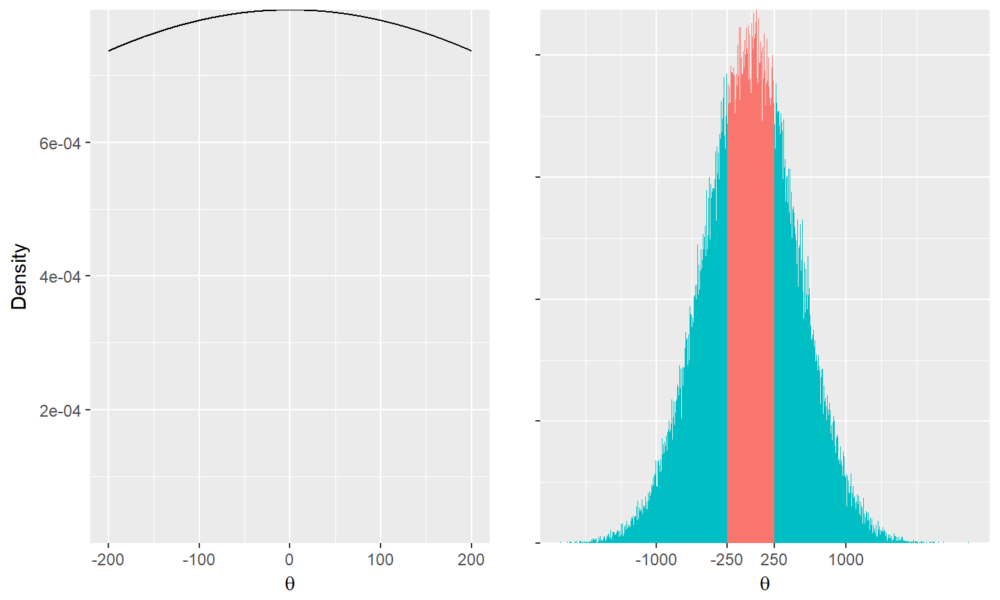

- The prior distribution is an inherent part of the model
- as are the error distribution and the link function
- Prior distributions povide the chance to include previous knowledge
An improper prior \(p\propto 1\) says that values close to 0 are equally likely as very large values
when a link function is applied

\[ \textrm N(0, 500^2) \]
To measure the influence of the choice of \(\textrm{Normal}(0, 5)\) for the slope parameter \[ \begin{align} y_i &\sim \textrm{Normal}(\mu,\sigma)\\ \mu & = \beta_0 + \beta_1X_1\\ \beta_1 & \sim \textrm{Normal}(0, 5)\\ \sigma & \sim \textrm{Cauchy}(0,5)[0,] \end{align} \] Fit 20 different models using priors from
very strongly informative \(\textrm{Normal}(0, .01)\) to vague \(\textrm{Normal}(0, .01)\)
data {
int<lower=0> n;
vector[n] y;
vector[n] x;
vector[20] sdprior;
}
parameters {
vector[20] beta0;
vector[20] beta1;
real<lower=0> sigma[20];
}
model {
beta0 ~ normal(0,5); //priors
sigma ~ cauchy(0,5);
for(k in 1:20){
beta1[k] w normal(0,sdprior[k]);
y ~ normal(beta0[k] þ beta1[k] * x, sigma[k]);// likelihood
}
}
Informative priors are chosen to keep the posterior distribution within a range of reasonable values and to stabilize MCMC algorithms
Write down what you think the prior should be, then spread it out
To re-compile the slides:
library(rmarkdown)
render("main.Rmd")